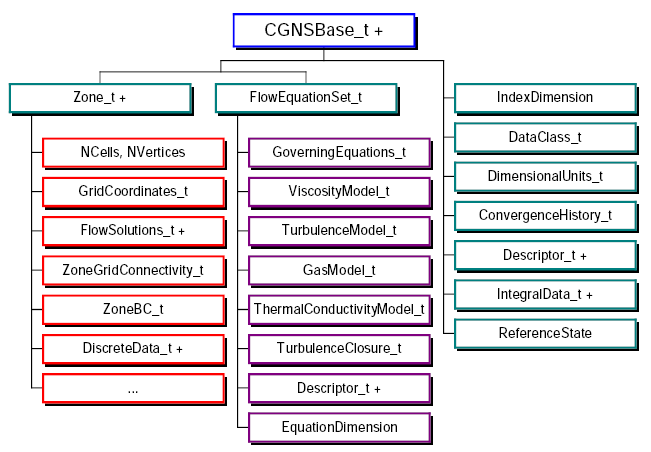
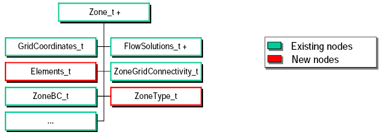
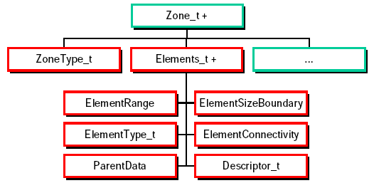
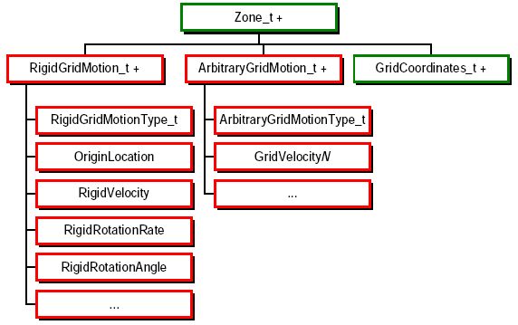
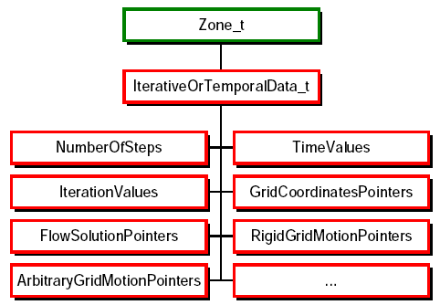

AIAA-2000-0681
Advances in the CGNS Database Standard for Aerodynamics and CFD
Reno, NV, January 12, 2000
Diane M. A. Poirier
ICEM CFD Engineering, Berkeley, CA
Robert H. Bush
United Technologies Research Center, East Hartford, CT
Raymond R. Cosner
Boeing Phantom Works, St. Louis, MO
Christopher L. Rumsey
NASA Langley Research Center, Hampton, VA
Douglas R. McCarthy
Boeing Commercial Airplane Group, Seattle, WA
Overview
- Introduction
- History
- CGNS Original Features and Components
- Advances in the CGNS
- Technical Extensions
- Unstructured Topology
- Geometry-to-Mesh Association
- Grid Motion
- Iterative and Time-Accurate data
- New Organization: The CGNS Steering Committee
- Migration to an ISO Standard
- Conclusion
Introduction: Objective
The CFD General Notation System (CGNS) was conceived to:
- Provide a general, portable and extensible standard for the storage
and retrieval of CFD analysis data.
- To offer the opportunity for seamless communication of CFD analysis
data between sites, applications and system architectures.
- To eliminate the overhead costs due to file translation, and
multiplicity of data sets in various formats.
Introduction: History of the CGNS Project
- 1994-1995:
- Series of meetings between Boeing and NASA addressing means of
improving technology transfer from NASA to Industry: The main
impediment to technology transfer is the disparity of file
formats.
- 1995-1998:
- Development of the CGNS System (SIDS, ADF) at Boeing Seattle,
under NASA Contract with participation from:
- Boeing Commercial Aircraft Group, Seattle
- NASA Ames/Langley/Lewis Research Centers
- Boeing St-Louis (former McDonnell Douglas Corporation)
- Arnold Engineering Development Center, for the NPARC
Alliance
- Wright-Patterson Air Force Base
- ICEM CFD Engineering Corporation
- 1997-1998:
- Development of the CGNS Library.
- Institution of the CGNS website (http://www.cgns.org) and
first official release of the CGNS software and documentation.
Introduction: CGNS Elements
- Conceptual entity: Collection of conventions and definitions
- Standard Interface Data Structures (SIDS)
- Database System: Software that performs I/O operations
- Advanced Data Format (ADF)
- Mapping of the SIDS to the ADF Core
- CGNS Application Programming Interface (API)

Introduction: CGNS Main Features
- Hierarchical data structure: quickly traversed and sorted, no need
to process irrelevant data
- Complete and explicit problem description
- Standardized naming conventions
- Ability to include unlimited documentation, and application
specific data
- Layered so that much of the data structures are optional
- ADF database: universal and self describing
- Based on a single data structure called an ADF node
- The data may encompass several files through the use of links
- Portable ANSI C software, with complete Fortran and C interfaces
- Files stored in compact C binary format
- Complete and architecture independent API
Introduction: Chart of Original SIDS

Extension: Unstructured Topology
- Unstructured blocks are recorded using the same data structure as
structured blocks, Zone_t
- Two new children are added to the Zone_t data structure:
- ZoneType_t = {Structured, Unstructured}
- Elements_t: Element connectivity, shape, range, ...

Extension: Elements Data Structure
Element_t is added under the Zone_t data structure to
record unstructured elements data:
- element based connectivity
- arranged by element type
- use global element numbering

Extension: Geometry-to-Mesh Association
Necessary for:
- Quick response to design changes
- Mesh adaptation
- Analysis and Display of Results
Objectives:
- Compatible to the CGNS System
- Reference data in CAD Files
- Associate CAD Data to Mesh and Boundary Conditions
Layer of indirection:
- Rarely a 1-to-1 connection between mesh regions & geometric
entities.
- Association independent of changes to mesh & geometry.
- Boundary conditions & material properties can be defined on
families.

Extension: Family Data Structure
Family_t is added under the CGNSBase_t data structure
to record references to geometry files.

Extension: Grid Motion
- RigidGridMotion_t: Records rigid translation and rotation
of the mesh
- ArbitraryGridMotion_t: Records point-by-point grid motion
or deformation

Extension: Iterative and Time-Accurate Data
IterativeOrTemporalData_t associates with each time step or
iteration the appropriate data structures for:
- rigid and arbitrary grid motion
- grid coordinates
- flow solutions.

Other Extensions Under Review
- Chemistry
- Multigrid
- Rotating Coordinate Systems
- Periodic Boundary Conditions
- Wall Functions
- 2D Axisymmety
- Cartesian Mesh
New Organization: The CGNS Steering Committee
- Mission: To ensure the continuation of the CGNS
- Charter: Adopted by the Committee on 21 October 1999
- Responsibilities:
- Maintain the software, documentation, and CGNS web site
- Ensure a free distribution of the software and
documentation
- Provide mechanisms for the evolution of the Standard
- Promote the acceptance of the standard
- Provide user services
- Membership:
- Currently limited to 15 organizations
- Organization:
- Meets at a minimum of once per year
- Is represented by a Chairperson
- Governs by consensus
- Welcomes participation of all parties, members or not
Migration to an ISO Standard
- Preliminary Stage - Planning for possible standardization
projects (accomplished 1998-99).
- Proposal Stage - Culminates in approval to start a new AP
project (completed November 1999).
- Preparatory Stage - Develop a Working Draft and a New Work
Item (planned completion October 2000).
- Committee Stage - Consensus is achieved on a Committee
Draft (planned completion ~ April 2001).
- Enquiry Stage - Vote on Draft International Standard.
- National Stage - Vote on Final Draft International Standard
(~2002)
- Publication Stage - ISO publishes the International
Standard.
CGNS Continues to Gain Acceptance
Number of Registered Users

Conclusion
- Technical progress
- The CGNS was extended to support unstructured topology and
geometry-to-mesh association
- Grid motion, iterative and time-accurate data have been added
to the SIDS, and soon will be added to the API
- Several other extensions are currently under review
- Organizational progress
- The CGNS Steering Committee governs the CGNS activities and
welcomes the participation of all parties
- Dissemination progress
- The CGNS is the object of an ISO standard for aerodynamic data
- The number of CGNS users is been growing steadily